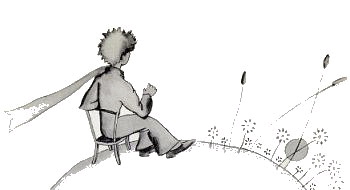

小王子 The Little Prince
第6章
第6章
哦，小王子！就这样，我一点一点知道了你那段忧郁的生活。过去很长的时间里，你唯一的乐趣就是观赏夕阳沉落的温柔晚景。这个新的细节，我是在第四天早晨知道的。当时你对我说：
“我喜欢看日落。我们去看一回日落吧……”
“可是得等……”
“等什么？”
“等太阳下山呀。”
开始，你显得很惊奇，随后你自己笑了起来。你对我说：
“我还以为在家乡呢！”
可不。大家都知道，美国的中午，在法国正是黄昏。要是能在一分钟内赶到法国，就可以看到日落。可惜法国实在太远了。而在你那小小的星球上，你只要把椅子挪动几步就行了。那样，你就随时可以看到你想看的夕阳余晖……
“有一天，我看了四十三次日落！”
过了一会儿，你又说：
“你知道……一个人感到非常忧伤的时候，他就喜欢看日落……”
“这么说，看四十三次的那天，你感到非常忧伤啰？”
但是小王子没有回答。